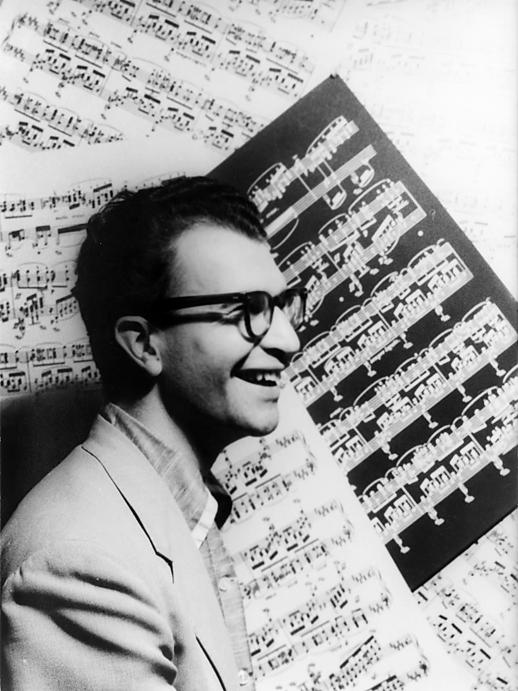
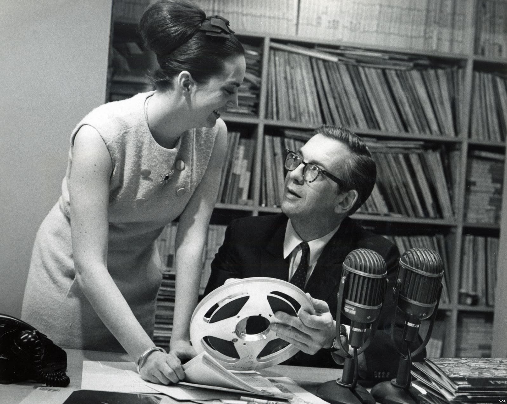
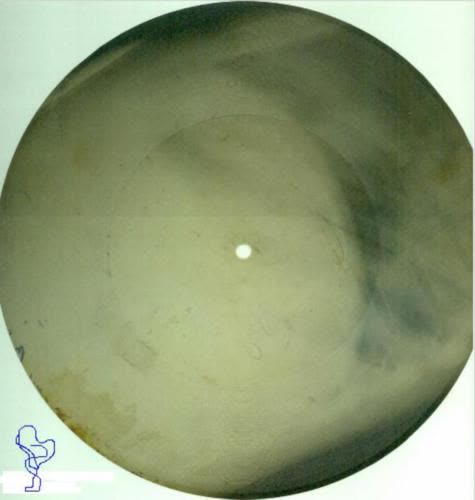
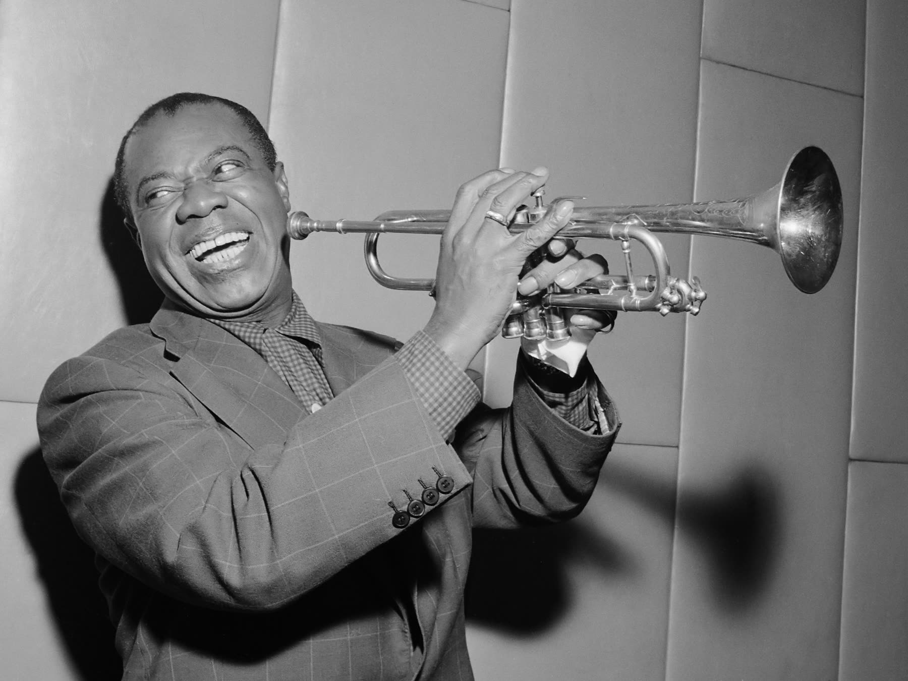
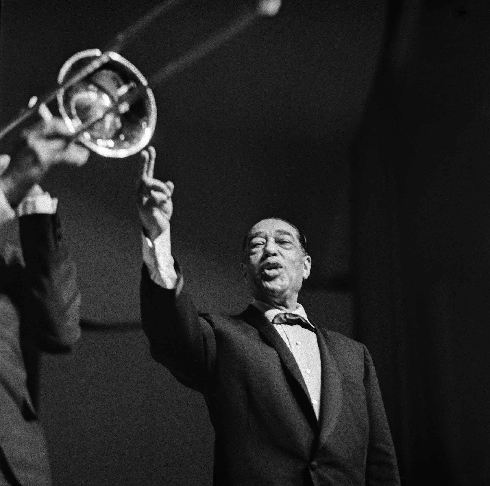

Foto:
Foto: Een band op wereldreis
In maart 1956 stapte Dizzy Gillespie met een bigband van achttien muzikanten in het vliegtuig voor een reis van tien weken. De rekening ging naar het Amerikaanse ministerie van Buitenlandse Zaken. De band, met zwarte en witte muzikanten door elkaar en de jonge Quincy Jones als muzikaal leider, speelde onder meer in Iran, Pakistan, Libanon, Turkije, Joegoslavië en Griekenland. Daarna volgde Zuid-Amerika.
Het idee kwam van Adam Clayton Powell, een zwart Congreslid uit Harlem. De Sovjet-Unie wees de wereld graag op de manier waarop Amerika zijn zwarte burgers behandelde. Een gemengde band die vrij en vrolijk speelde, liet een ander Amerika zien. Jazz was muziek waarin iedere muzikant zijn eigen stem had en toch samen met de anderen speelde. Beter kon je democratie niet uitleggen.

Gillespie schreef dit nummer al in 1942. Hoor hoe de bigband het thema over een Latijns-Amerikaans ritme speelt en hoe zijn trompet er hoog bovenuit klimt.
 Foto: Carl Van Vechten · Public domain
Foto: Carl Van Vechten · Public domainEen ritme uit Turkije
Twee jaar later was Dave Brubeck aan de beurt. Zijn kwartet speelde in 1958 eerst in Oost-Duitsland en Polen, achter het IJzeren Gordijn, en reisde daarna door naar Turkije, Afghanistan, Pakistan, India, Sri Lanka, Iran en Irak. Een paar weken nadat Brubeck uit Irak was vertrokken, werd daar de koning afgezet.
In Turkije hoorde Brubeck straatmuzikanten in een maat van negen tellen spelen. Toen hij vroeg waar dat ritme vandaan kwam, kreeg hij als antwoord dat het voor hen was wat de blues voor Amerikanen is. Thuis maakte hij er Blue Rondo à la Turk van, het openingsnummer van Time Out uit 1959. Wat hij op de reis hoorde en zag, verwerkte hij ook op Jazz Impressions of Eurasia.
Dit ritme is voor ons wat de blues voor jullie is.Een Turkse straatmuzikant tegen Dave Brubeck

Tel mee: de maat heeft negen tellen, verdeeld als twee, twee, twee en drie. Halverwege schakelt de band over op een gewone bluesmaat van vier tellen, en daarna weer terug.

Een van de stukken waarmee Brubeck zijn reis door Azië in muziek vastlegde, een jaar voor Time Out.

Foto: Carl Van Vechten · Public domainDe stem van Willis Conover
Wie achter het IJzeren Gordijn woonde, kon de bands meestal niet zien spelen. Maar je kon ze wel horen. Vanaf 1955 presenteerde Willis Conover elke avond een jazzprogramma op de Voice of America, de radiozender van de Amerikaanse regering. Hij sprak langzaam en in eenvoudig Engels, zodat luisteraars in Warschau, Praag en Moskou hem konden volgen. Voor een hele generatie Oost-Europese jazzfans was hij de eerste leraar Engels.

Foto: Voice of America · Public domainElke uitzending begon en eindigde met Take the 'A' Train van Duke Ellington. In de Sovjet-Unie werd Conover een beroemdheid, en toen hij in 1959 voor het eerst naar Polen kwam, stroomden de mensen toe. In Amerika zelf kende bijna niemand hem: daar was de Voice of America nauwelijks te ontvangen.

De herkenningsmelodie van Conovers programma. Billy Strayhorn schreef het voor het orkest van Duke Ellington; de titel verwijst naar de metrolijn naar Harlem.
Jazz op röntgenfoto's
Platen met westerse muziek waren in de Sovjet-Unie bijna niet te krijgen. Daarom maakten muziekliefhebbers ze zelf, op oude röntgenfoto's uit ziekenhuizen. Ze knipten de foto's rond, brandden met een sigaret een gat in het midden en sneden er groeven in. Op zo'n plaat zag je de botten van een onbekende patiënt, en daarom heetten ze ribben, of jazz op botten.

Foto: Alexander Nevzorov · Public domainEr stond jazz op, later ook Elvis en de Beatles, en liedjes van Russische zangers die naar het buitenland waren gevlucht. Het geluid was slecht en na vijf tot tien keer draaien was de plaat versleten. Maar hij kostte maar een roebel, en je had iets wat de staat je niet wilde laten horen.
Welk Amerika?
Het plan had een zwakke plek. In september 1957 werden in Little Rock, in de staat Arkansas, negen zwarte scholieren door soldaten tegengehouden bij de deur van een witte school. Louis Armstrong, met wie werd gepraat over een tournee door de Sovjet-Unie, zegde af. Zoals ze zijn mensen in het Zuiden behandelden, zei hij, kon de regering naar de hel lopen.
Zoals ze mijn mensen in het Zuiden behandelen, kan de regering naar de hel lopen.Louis Armstrong, september 1957
Amerikaanse diplomaten maakten er later handig gebruik van: in welk ander land mocht een beroemdheid zo over zijn regering praten? Dave en Iola Brubeck schreven er een musical over, The Real Ambassadors, met Armstrong in de hoofdrol. De vraag die erin blijft hangen: welk Amerika vertegenwoordigt de ambassadeur eigenlijk?

Foto: Herbert Behrens / Anefo · CC0
Armstrong zingt dat hij de echte ambassadeur is. Luister naar de ironie: hij reist de wereld rond voor een land waar hij thuis niet overal welkom is.
Een afgebroken reis
In augustus 1963 vertrok Duke Ellington met zijn orkest naar Damascus, voor een tournee van drie maanden langs onder meer Syrië, Afghanistan, India, Iran en Irak. Na de moord op president Kennedy, in november, werd de reis afgebroken. Ellington en Billy Strayhorn verwerkten wat ze hoorden in de Far East Suite, met Isfahan, genoemd naar de stad in Iran.

Foto: Bert Carpelan · CC BY 4.0Pas in 1971 speelde Ellington in de Sovjet-Unie. Jazz was een wapen gebleken dat zich niet liet richten. De muzikanten speelden voor de vrijheid, ook voor die van henzelf.

Een lange, zingende saxofoonmelodie van Johnny Hodges, zonder haast. Ellington noemde het stuk naar de Iraanse stad, maar Strayhorn had de melodie al eerder geschreven.